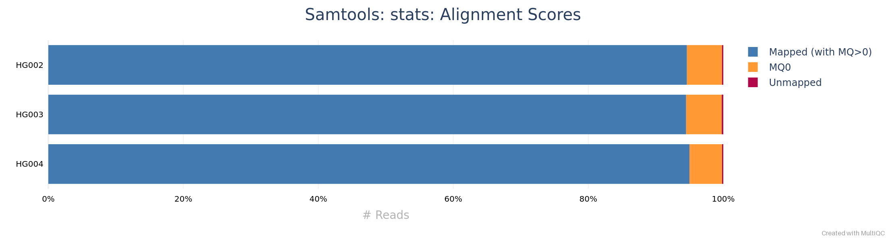
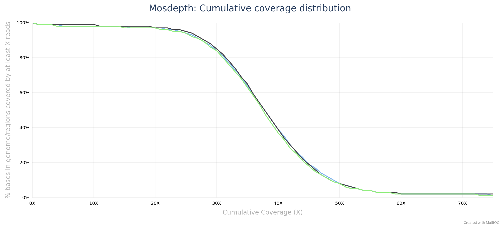

4. Read alignment and alignment QC
Last updated on 2026-10-13 | Edit this page
Estimated time: 90 minutes
Overview
Questions
- How are reads placed on the reference genome?
- Why does mapping quality matter for variant calling?
- How do we produce analysis-ready BAM files on the cluster?
- How do we know the alignment worked?
Objectives
- Explain why mapping quality matters for calling.
- Align with
bwa memusing correct read groups. - Produce sorted, duplicate-marked and indexed BAMs.
- Read SAM fields (FLAG, CIGAR, MAPQ).
- Interpret mapping, pairing, duplicate, insert-size and coverage metrics.
- View a locus.
Introduction
A caller can only be as good as the alignments it reads. In this
episode we align the reads of all three samples to GRCh38 with
bwa mem, mark duplicate reads, and write sorted, indexed
BAM files. Then we check the alignments: how many reads mapped, how many
in proper pairs, how many duplicates, how deep the coverage is, and what
the reads look like at one variant.
Alignment is the longest job of the day, so we start it first and take the script apart while it runs.
Before you start
You need the workshop copy from Episode 2: the FASTQ files in
data/, the sample sheet data/samples.tsv, the
reference links in ref/, and the script
scripts/align.sh. Episode 3 is not required.
Step 1: Submit the alignment job
The alignment script is already in your scripts/ folder.
Submit it now from that folder; the next sections explain every line
while it runs:
sbatch prints a job ID. The script is an array job with
three tasks, one per sample, and each task uses 16 cores. In the
workshop’s test runs each task took 10 to 14 minutes, plus the time
waiting in the standby queue. Check on it with:
Each task writes its log to
scripts/cluster-align.<jobid>.out and
.err. When squeue no longer lists the job, it
has finished.
Pacing (plan section 4): have learners submit align.sh
at the end of the Episode 2-3 block, before the morning break, so the
jobs run during the break. Episode 4 then dissects the script while the
jobs finish. If learners submit only now, the explanation sections below
still cover the run time.
Short on time?
If your alignment job fails or is still waiting when we reach Step 3,
copy the finished BAM files, their indexes and the duplicate statistics
from the results copy into your own results/bam/ (about 3.2
GB):
BASH
cp /depot/workshop/data/varcall-workshop_results/results/bam/HG00?.markdup.bam* $SCRATCH/varcall-workshop/results/bam/
cp /depot/workshop/data/varcall-workshop_results/results/bam/HG00?.markdup.stats.txt $SCRATCH/varcall-workshop/results/bam/Cancel your own job first (scancel <jobid>), so it
does not overwrite the copies. Episodes 5A onward work the same with
either set of BAMs.
How short-read alignment works
An aligner has to find, for each of millions of reads, the place in a
3.1 Gb genome where it fits best, allowing for sequencing errors and
real variants. Checking every position for every read would take far too
long, so bwa mem uses seed and extend: it
first finds exact matches between the read and the genome (seeds) using
an index of the reference, and then extends the best seeds into a full
alignment that may contain mismatches and gaps (bwa manual).
bwa mem aligns locally: if the end of a read does not
match, for example because it runs into adapter sequence or crosses a
structural variant, that end is soft-clipped, kept in
the file but not aligned. With paired reads, it also uses the expected
distance and orientation of the two mates to choose between candidate
positions and to rescue a mate that did not align well on its own.
Mapping quality and multi-mapping reads
Some reads fit equally well in several places, for example inside a repeat. The aligner then picks one of the equally good positions and reports how unsure it is as the mapping quality (MAPQ): the Phred-scaled probability that the position is wrong (SAM specification). A read with several equally good positions gets MAPQ 0: the position written in the file is one guess among them.
This is why mapping quality matters for calling. If a read from one copy of a repeat is placed on another copy, every difference between the two copies looks like a variant at the wrong place. Callers down-weight or skip low-MAPQ reads, and Episode 6 filters sites whose reads have low average mapping quality.
The reference index
bwa mem needs the reference in its own index format: the
five files GRCh38_no_alt.fa.amb, .ann,
.bwt, .pac and .sa in
ref/. NCBI publishes this index for the no-alt analysis
set, and it loads in bwa 0.7.17, so we did not build it (feasibility
memo). Unpacked, it is 5.42 GB.
The index is loaded into memory by every alignment task. On Negishi, memory comes with the cores you request, about 1.9 GB per core; there is no separate memory request in our scripts. The 16 cores of each task bring enough memory for the index and the sorting step: in the reference run, the largest task used 13.5 GiB.
Reference only: do not run this on the workshop reference.
For your own organism, build the index once from its FASTA file, in a batch job, and keep it with the reference:
This writes the same five files next to my_genome.fa.
For a genome the size of human it is a long, memory-hungry job, which is
why we use the published index. Index files only work with the FASTA
they were built from: if you change the FASTA (for example, rename a
sequence), build the index again.
Step 2: The alignment script, line by line
This is scripts/align.sh as you submitted it:
BASH
#!/bin/bash
#SBATCH --nodes=1
#SBATCH --ntasks=1
#SBATCH --cpus-per-task=16
#SBATCH --account=rcac
#SBATCH --qos=standby
#SBATCH --partition=cpu
#SBATCH --time=01:00:00
#SBATCH --job-name=align
#SBATCH --array=1-3
#SBATCH --output=cluster-%x.%j.out
#SBATCH --error=cluster-%x.%j.err
module load biocontainers
module load bwa/0.7.17
module load samtools/1.22.1
WORK=$SCRATCH/varcall-workshop
REF=$WORK/ref/GRCh38_no_alt.fa
OUTDIR=$WORK/results/bam
mkdir -p $OUTDIR
# One sample per array task: task N reads line N+1 of samples.tsv (line 1 is the header)
LINE=$(sed -n "$((SLURM_ARRAY_TASK_ID + 1))p" $WORK/data/samples.tsv)
IFS=$'\t' read -r SAMPLE ROLE SEX FAMILY FASTQ_R1 FASTQ_R2 RG_ID RG_LB RG_PL <<< "$LINE"
# Read group: SM becomes the sample name in the VCF. Keep \t as typed; bwa turns it into tabs.
RG="@RG\tID:${RG_ID}\tSM:${SAMPLE}\tLB:${RG_LB}\tPL:${RG_PL}"
# -K 100000000 makes the alignments identical for any number of threads
bwa mem -K 100000000 -t $SLURM_CPUS_PER_TASK -R "$RG" $REF \
$WORK/data/$FASTQ_R1 $WORK/data/$FASTQ_R2 \
| samtools fixmate -m -u - - \
| samtools sort -u -@ 4 -m 1500M -T $OUTDIR/${SAMPLE}.sorttmp - \
| samtools markdup -@ 4 --write-index -f $OUTDIR/${SAMPLE}.markdup.stats.txt \
-T $OUTDIR/${SAMPLE}.mdtmp - $OUTDIR/${SAMPLE}.markdup.bamThe SLURM header
The #SBATCH lines request one node, 16 cores
(--cpus-per-task=16) and one hour, on the cpu
partition with the standby QoS, under the workshop account.
--array=1-3 turns the script into three tasks, numbered 1,
2 and 3, that run independently; inside each task,
$SLURM_ARRAY_TASK_ID holds its number. Logs go to
cluster-<jobname>.<jobid>.out and
.err in the folder you submitted from.
One sample per task
sed -n "$((SLURM_ARRAY_TASK_ID + 1))p" prints one line
of samples.tsv: line 2 for task 1, because line 1 is the
header. IFS=$'\t' read -r ... then splits that line at tabs
into named variables, one per column. Task 1 aligns the first sample in
the sheet, task 2 the second, and so on, so the sheet decides which
sample each task processes.
The path to the sheet is absolute
($WORK/data/samples.tsv). A script that reads
samples.tsv relative to the current folder works only when
it is submitted from the folder that contains the sheet, and fails, or
reads the wrong file, from anywhere else.
Read groups
A read group labels a set of reads that were
sequenced together. bwa mem -R adds a header line
(@RG) to the BAM file and tags every read with its ID. The
fields we set are defined in the SAM
specification:
| Field | Meaning | Value here |
|---|---|---|
ID |
unique identifier of the read group |
rg_id from the sample sheet |
SM |
sample name | the sample, for example HG002
|
LB |
library |
rg_lb from the sample sheet |
PL |
sequencing platform | ILLUMINA |
SM matters most: bcftools takes the sample names of the
VCF from the SM field of the read groups, so every BAM must
carry the right one. Reads with the same SM are treated as
one sample, even if they are in different files.
The \t in the RG= line is typed as a
backslash and a t, not as a real tab. bwa
converts each \t into a tab when it writes the header. Real
tab characters in the -R argument, or a missing
ID or SM, make bwa stop with an
error.
bwa mem
-
-K 100000000makesbwa memprocess input in batches of a fixed size (100 million bases) regardless of the number of threads. Without it, the batch size depends on the thread count, and so can the results (bwa manual). The reference run checked this: HG002 aligned at 16 and at 32 cores gave identical alignments. -
-t $SLURM_CPUS_PER_TASKuses all 16 cores of the task. - The output is SAM text, written to standard output and piped
(
|) straight into the next command. No large intermediate file is written.
samtools fixmate -m, then sort, then
markdup
The three samtools steps follow the order the samtools markdup manual requires:
-
samtools fixmate -mfills in information about each read’s mate, including the mate score tag thatmarkdupneeds (added by-m). It must see the two reads of a pair next to each other.bwa memwrites pairs together, so its output can go straight intofixmate; a coordinate-sorted file would first needsamtools collate. -
samtools sortsorts by position on the genome, which callers and viewers need.-@ 4adds 4 threads,-m 1500Mlets each thread use up to 1.5 GB of memory before writing temporary files, and-Tnames those temporary files. -
samtools markdupfinds duplicates in the sorted file, flags them, writes the final BAM, and, with--write-index, its index.-fwrites a short statistics file.
-u passes uncompressed data between the steps, which
saves the time of compressing and decompressing data that is read again
immediately. The - arguments mean standard input or
standard output. Sorting before fixmate is a common
mistake: fixmate needs the two reads of each pair next to
each other, and in a position-sorted file it cannot pair them, so the
mate information markdup relies on is missing or wrong.
Why mark duplicates, and why not remove them?
Duplicates are copies of one original DNA fragment. If one fragment carries a sequencing error and is read several times, the error appears in several reads and looks like independent support for a variant. Marking duplicates lets the caller count each fragment once.
samtools markdup flags duplicates (FLAG bit 1024) and
keeps them in the file. bcftools skips flagged duplicates by default (bcftools
manual, mpileup), and the reads are still there if you
need them, for example to inspect a site or recount. The old
samtools rmdup command removes reads instead; use
markdup (samtools
manual).
Challenge: what if the read groups are wrong?
- Suppose
samples.tsvlistedHG002in thesamplecolumn of all three rows. The script would still run without error. What would the VCF in Episode 5A look like? - Why does the script write the read group from the sample sheet instead of having you type it for each sample?
- All three BAMs would carry
SM:HG002, so bcftools would treat all reads as one sample. The VCF would have one sample column,HG002, with the reads of three people pooled: about 116x of mixed evidence and genotypes that belong to nobody. Nothing would fail, which is what makes this error dangerous. Check the@RGlines after alignment (Step 3 does). - One source of truth: the sample name, file names and read group come from the same row, so they cannot disagree, and the sheet is a record of what was done. Typing them per sample is where mistakes come from.
SAM and BAM
The aligner writes SAM, a tab-separated text format
with a header (lines starting with @) and one line per
alignment. BAM is the same content, compressed in
blocks so it can be indexed for fast access to any region; that is what
we keep. CRAM compresses further by storing only
differences from the reference, and so needs the exact reference FASTA
to be read back (htslib
file formats).
Each alignment line has 11 mandatory columns (SAM specification):
| Column | Name | Meaning |
|---|---|---|
| 1 | QNAME | read name (both reads of a pair share it) |
| 2 | FLAG | properties of the read, as a sum of bit values |
| 3 | RNAME | reference sequence name, for example chr20
|
| 4 | POS | 1-based position of the leftmost aligned base |
| 5 | MAPQ | mapping quality |
| 6 | CIGAR | how the read aligns: M aligned (match or mismatch),
I insertion, D deletion, S soft
clip, H hard clip |
| 7 | RNEXT | reference name of the mate (= for the same) |
| 8 | PNEXT | position of the mate |
| 9 | TLEN | observed template (fragment) length |
| 10 | SEQ | read sequence |
| 11 | QUAL | base qualities, as in FASTQ |
For example, the CIGAR 100M2D51M means 100 aligned
bases, a 2 bp deletion in the read relative to the reference, then 51
aligned bases. 20S131M means the first 20 bases are
soft-clipped.
The FLAG is a sum of bits, each with a meaning. The ones you meet most often:
| Bit | Meaning |
|---|---|
| 1 | read is paired |
| 2 | read is in a proper pair |
| 4 | read is unmapped |
| 16 | read is reverse-complemented |
| 32 | mate is reverse-complemented |
| 64 | first read of the pair |
| 128 | second read of the pair |
| 256 | secondary alignment |
| 1024 | duplicate |
| 2048 | supplementary alignment |
Step 3: Check the alignments
When squeue shows that your alignment job has finished,
start an interactive session and load the QC tools. List the output
files first:
BASH
sinteractive -A rcac -q standby -p cpu -N 1 -n 4 --time=1:00:00
module load biocontainers
module load samtools/1.22.1
module load mosdepth/0.3.3
module load multiqc/1.23
cd $SCRATCH/varcall-workshop
ls -lh results/bamOUTPUT
total 3.1G
-rw-r--r-- 1 aseethar workshop 1.1G Oct 10 21:35 HG002.markdup.bam
-rw-r--r-- 1 aseethar workshop 249K Oct 10 21:35 HG002.markdup.bam.csi
-rw-r--r-- 1 aseethar workshop 769 Oct 10 21:35 HG002.markdup.stats.txt
-rw-r--r-- 1 aseethar workshop 1.1G Oct 10 21:32 HG003.markdup.bam
-rw-r--r-- 1 aseethar workshop 248K Oct 10 21:32 HG003.markdup.bam.csi
-rw-r--r-- 1 aseethar workshop 770 Oct 10 21:32 HG003.markdup.stats.txt
-rw-r--r-- 1 aseethar workshop 1015M Oct 10 21:31 HG004.markdup.bam
-rw-r--r-- 1 aseethar workshop 247K Oct 10 21:31 HG004.markdup.bam.csi
-rw-r--r-- 1 aseethar workshop 769 Oct 10 21:31 HG004.markdup.stats.txtThe first two lines are the message the biocontainers module prints
when it is loaded. Each sample has a BAM file (about 1 GB), its
.csi index and the duplicate statistics from
markdup. samtools markdup --write-index writes
a CSI index rather than the older .bai format; samtools,
bcftools and mosdepth read both.
Now compute three sets of metrics for each sample:
samtools flagstat (counts by FLAG),
samtools stats (detailed statistics) and
mosdepth (coverage). This takes about 3 minutes for the
three samples:
BASH
for SAMPLE in HG002 HG003 HG004; do
samtools flagstat -@ 4 results/bam/$SAMPLE.markdup.bam > results/qc_alignment/$SAMPLE.flagstat.txt
samtools stats -@ 4 results/bam/$SAMPLE.markdup.bam > results/qc_alignment/$SAMPLE.stats.txt
mosdepth -t 4 -n --fast-mode -c chr20 results/qc_alignment/$SAMPLE results/bam/$SAMPLE.markdup.bam
doneFor mosdepth, -c chr20 restricts the
calculation to chromosome 20, -n skips the per-base output
file, and --fast-mode skips the correction for overlapping
mates and the details of each CIGAR, which the mosdepth documentation
recommends for most uses.
Read counts by flag
OUTPUT
18980761 + 0 in total (QC-passed reads + QC-failed reads)
18924900 + 0 primary
0 + 0 secondary
55861 + 0 supplementary
1975897 + 0 duplicates
1975897 + 0 primary duplicates
18944359 + 0 mapped (99.81% : N/A)
18888498 + 0 primary mapped (99.81% : N/A)
18924900 + 0 paired in sequencing
9462450 + 0 read1
9462450 + 0 read2
18759278 + 0 properly paired (99.12% : N/A)
18852096 + 0 with itself and mate mapped
36402 + 0 singletons (0.19% : N/A)
6198 + 0 with mate mapped to a different chr
1177 + 0 with mate mapped to a different chr (mapQ>=5)Each line counts reads that pass QC and reads that fail it (always 0 here). “primary” counts each read once (18,924,900, the same as the FASTQ files); the total also includes 55,861 supplementary alignments, the extra records written when parts of one read align to different places. “singletons” are the 36,402 reads whose mate did not map.
Detailed statistics
The SN (summary numbers) section of
samtools stats holds most of what we need:
OUTPUT
raw total sequences: 18924900 # excluding supplementary and secondary reads
filtered sequences: 0
sequences: 18924900
is sorted: 1 # sorted by coordinate
1st fragments: 9462450
last fragments: 9462450
reads mapped: 18888498
reads mapped and paired: 18852096 # paired-end technology bit set + both mates mapped
reads unmapped: 36402
reads properly paired: 18759278 # proper-pair bit set
reads paired: 18924900 # paired-end technology bit set
reads duplicated: 1975897 # PCR or optical duplicate bit set
reads MQ0: 983436 # mapped and MQ=0
reads QC failed: 0
non-primary alignments: 0
supplementary alignments: 55861
total length: 2857659900 # ignores clipping
total first fragment length: 1428829950 # ignores clipping
total last fragment length: 1428829950 # ignores clipping
bases mapped: 2852163198 # ignores clipping
bases mapped (cigar): 2820427153 # more accurate
bases trimmed: 0
bases duplicated: 298360447
mismatches: 18104874 # from NM fields
error rate: 6.419195e-03 # mismatches / bases mapped (cigar)
average length: 151
average first fragment length: 151
average last fragment length: 151
maximum length: 151
maximum first fragment length: 151
maximum last fragment length: 151
average quality: 35.5
insert size average: 410.1
insert size standard deviation: 171.2
inward oriented pairs: 9356092
outward oriented pairs: 62584
pairs with other orientation: 4273
pairs on different chromosomes: 3099
percentage of properly paired reads (%): 99.1The lines to read first: raw total sequences (reads in
the file), reads mapped,
reads properly paired, reads duplicated,
reads MQ0 (mapped reads with mapping quality 0),
insert size average and error rate (mismatches
per aligned base, which includes real variants).
Coverage
OUTPUT
chrom length bases mean min max
chr20 64444167 2518794994 39.08 0 13784
total 64444167 2518794994 39.08 0 13784The columns are the chromosome, its length, the number of aligned
bases counted, and the mean, minimum and maximum depth. The
total row repeats chr20 because we restricted the
calculation to it.
The mean is only a summary.
results/qc_alignment/HG002.mosdepth.global.dist.txt lists,
for each depth, the fraction of chromosome 20 covered at least that
deeply, which shows how uniform the coverage is. The MultiQC report
below plots it.
Mapping quality 0 and read groups
Count the reads with mapping quality 0, and check the read group the script wrote:
BASH
samtools view -c -e 'mapq==0' results/bam/HG002.markdup.bam
samtools view -H results/bam/HG002.markdup.bam | grep '^@RG'OUTPUT
1054357
@RG ID:HG002.pcr-free SM:HG002 LB:HG002.pcr-free PL:ILLUMINA-e 'mapq==0' is a filter expression:
samtools view keeps only records for which it is true, and
-c counts them instead of printing them (samtools view
manual).
Summarize with MultiQC
MultiQC finds the flagstat, stats and
mosdepth outputs and puts all samples side by side:
Copy results/qc_alignment/multiqc_report.html to your
computer and open it, as in Episode 3.


Challenge: interpret the alignment metrics
Using the samtools stats output and the MultiQC
report:
- What fraction of HG002’s reads mapped, and what fraction are in proper pairs? Would you expect the same in a real whole-genome run?
- What fraction of reads are marked as duplicates in each sample?
- What is the average insert size, and how does it compare with the read length?
- What is the mean depth on chromosome 20 in each sample, and what fraction of chromosome 20 is covered by at least 10 reads in HG002?
- HG002 has 18,924,900 reads; 18,888,498 mapped (99.81%) and 18,759,278 are properly paired (99.12%). HG003 and HG004 are similar (99.77% and 99.82% mapped). In a real whole-genome run you would not see this: our reads were selected because they aligned to chromosome 20 before (Episode 2), so nearly all of them align again.
- HG002 10.44% (1,975,897 reads), HG003 10.98% (2,082,305), HG004 10.99% (2,053,967). PCR-free libraries still have duplicates (Episode 3). They stay in the files, flagged, and the caller skips them.
- The average insert size is 410.1 bp in HG002, 417.8 bp in HG003 and 399.4 bp in HG004, with standard deviations of 162 to 173 bp. The fragments are longer than two reads (2 x 151 = 302 bp), so the two reads of most pairs do not overlap, and adapter read-through is rare (Episode 3).
- Mean depth: HG002 39.08x, HG003 38.90x, HG004 38.42x. In HG002,
98.0% of chromosome 20 is covered by at least 10 reads. Part of the rest
is sequence that no read can cover: chromosome 20 contains stretches of
Nin the reference.
Challenge: how many reads have mapping quality 0?
- How many of HG002’s reads have mapping quality 0, as a fraction of
all reads? Compare the count from
samtools view -c -e 'mapq==0'withreads MQ0fromsamtools stats. - Where in the genome do you expect these reads?
- Why should a caller give these reads little or no weight?
-
samtools statsreports 983,436 mapped reads with MAPQ 0 in HG002, 5.20% of 18,924,900 reads (HG003 5.28%, HG004 4.82%).samtools view -ccounted 1,054,357, which is 70,921 more.samtools statscounts only mapped reads (its comment says “mapped and MQ=0”) and leaves out supplementary alignments, whilesamtools view -ccounts every record whose MAPQ is 0. The 36,402 unmapped reads also have MAPQ 0 in the file, and supplementary records (55,861 in all) can account for the rest. - In repeats and duplicated sequence: segmental duplications, the centromere, and other regions where a 151 bp read, or even a read pair, matches several places equally well.
- A MAPQ 0 read may come from another copy of the repeat. Differences between the copies would look like variants. Episode 6 shows that the raw calls in the centromere have a much lower transition/transversion ratio than calls elsewhere, the signature of many false calls.
Step 4: Read individual alignments
Look at a few alignments at the heterozygous site from Episode 2,
chr20:88,108. samtools view with a region prints the reads
overlapping it; we cut the output to the first nine columns, leaving out
the sequence and qualities:
OUTPUT
A00744:46:HV3C3DSXX:2:1441:32533:3443 163 chr20 87958 60 151M = 88080 273
A00744:46:HV3C3DSXX:2:2505:30581:31125 1171 chr20 87961 60 151M = 87802 -310
A00744:46:HV3C3DSXX:2:2505:29134:25895 147 chr20 87961 60 151M = 87802 -310samtools flags translates FLAG values into names (samtools flags
manual):
OUTPUT
0x63 99 PAIRED,PROPER_PAIR,MREVERSE,READ1
0x463 1123 PAIRED,PROPER_PAIR,MREVERSE,READ1,DUPChallenge: decode a FLAG
- Decode FLAG 99 by hand with the bit table above. Which read of the pair is it, on which strand, and is the pair proper?
- FLAG 1123 differs from 99 by one bit. Which one, and what does it mean for variant calling?
- Pick one read from the
samtools viewoutput above and decode its FLAG and CIGAR.
- 99 = 64 + 32 + 2 + 1: paired (1), in a proper pair (2), mate reverse-complemented (32), first read of the pair (64). Bit 16 is not set, so this read is on the forward strand and its mate on the reverse strand: the usual orientation of a proper Illumina pair.
- 1123 = 1024 + 99: the same read, marked as a duplicate. bcftools skips it when calling.
- In the output above, the first read has FLAG 163 = 128 + 32 + 2 + 1:
the second read of a proper pair, on the forward strand, with its mate
on the reverse strand. The second read has FLAG 1171 = 1024 + 128 + 16 +
2 + 1: the second read of a proper pair, on the reverse strand, marked
as a duplicate. The third read (FLAG 147) has the same position, mate
position and template length as the second, which is why
markdupflagged one of the two. All three have the CIGAR151M: all 151 bases aligned without gaps or clipping.
Step 5: View a locus
A text view of the pileup shows what the caller will see.
samtools tview normally runs as an interactive full-screen
viewer; with -d T it prints a text snapshot instead,
-p sets the first position shown, -w the width
in columns, and -i hides insertions, so that each column is
one reference position (samtools tview
manual). Starting 20 bases before chr20:88,108 puts the variant in
column 21:
OUTPUT
88091 88101 88111
TGTTGTATCTATTTCATTGTTGTGTCCTATTAGTTCTCCTA
....................Y....................
,,,g,,,,,,,,,,,,,,,,c,,,,,,,c,,,,,,,,,,,,
....... ................................
,,,,,,,,,,,,,, ,,,,,,,,,,,,,
....................C ..........
,,,,,,,,,,,,,,,,,,,,,,,, ..........
,,,,,,,,,,,,,,,,,,,,,,,, ..........
.........................................
....................................... ,
,,,,,,,,,,,,,,,,,,,,,,,,,,,,,,,,,,,,,a,
,,,,,,,,,,,,,,,,,,,,,,,,,,,,,,,,,,,,,,,,,
,,,,,,,,,,,,,,,,,,,,,,,,,,,,,,,,,,,,,,,,,
....................C....................
.........................................
.........................................
,,,,,,,,,,,,,,,,,,,,c,,,,,,,,,,,,,,,,,,,,
,,,,,,,,,,,,,,,,,,,,,,,,,,,,,,,,,,,,,,,,,
,,,,,,,,,,,,,,,,,,,,c,,,,,,,,,,,,,,,,,,,,
.........................................
,,,,,,,,,,,,,,,,,,,,,,,,,,,,,,,,,,,,,,,,,
.........................................
.........................................
,t,,,,,,a,,,,,,,,,,,ct,,,,,,,,,,,,,,,,,,,
,,,,,,,,,,,,,,,,,,,,,,,,,,,,,,,,,,,,,,,,,
.........................................
,,,,,,,,,,,,,,,,,,,,c,,,,,,,,,,,,,,,,,,,,
,,,,,,,,,,,,,,,,,,,,c,,,,,,,,,,,,,,,,,,,,
....................C....................
.........................................
,t,,t,t,,,,,,,,,,,,,,,,,,,,,,,,,,,,,,,,,,
,,,,,,,,,,,,,,,,,,,,,,,,,,,,,,,,,,,,,,,,,
............A............................
,,,,,,,,,,,,,,,,,,,,,,,,,,,,,,,,,,,,,,,,,
,,,,,,,,,,,,,,,,,,,,c,,,,,,,,,,,,,,,,,,,,
,,,,,,,,,,,,,,,,,,,,c,,,,,,,,,,,,,,,,,,,,
,,,,,,,,,,,,,,,,,,,,,,,,,,,,,,,,,,,,,,,,,
....................C....................
,,,,,,,,,,,,,,,,,,,,c,,,,,,,,,,,,,,,,,,,,
.........................................
,,,,,,,,,,,,,,,,,,,,,,,,,,,,,,,,,,,,,
,,,,,,,,,c,,,,,,,,,,,,,,,,,,,,
.........
.........
..The first three lines are a position ruler, the reference sequence,
and a consensus of the reads, which shows an ambiguity code where the
reads disagree (for example Y for C or T). Below them, each
line holds one or more reads: . is a base matching the
reference on the forward strand, , on the reverse strand,
and a letter is a mismatch (upper case forward, lower case reverse).
* marks a deleted base.
Challenge: read the pileup
- In the text view, count the reads that show
C(orc) in column 21, and the reads that match the reference there. What genotype do you expect the caller to report for HG002? - The benchmark says HG002 is homozygous for the ALT allele
Aat chr20:85,259 (referenceG). Write thetviewcommand that shows this site in column 21, and predict what you will see before you run it.
Column 21 holds 39 reads: 14 show
Corcand 25 match the referenceT, and the consensus line showsY. That is 36%C, fewer than half, but not unusual for a heterozygous site: with 39 reads, a perfectly balanced site gives 14 or fewer reads of one particular allele about 5% of the time (binomial, Episode 1). Expect the caller to report0/1. The benchmark for HG002 agrees:0/1at this position.-
Start 20 bases earlier, at 85,239:
Nearly every read should show
Aorain column 21, and the consensus line showsA: a homozygous ALT site. In the test run, all 50 reads in column 21 showAoraand none matches the referenceG.
Graphical viewing is decided in P6 (IGV through a graphical session,
or prepared snapshots). Until then, samtools tview -d T is
the locus view for this episode. Learners can also run
samtools tview without -d T for the
interactive viewer (? for help, q to
quit).
Base quality recalibration (concept only)
Sequencers can be systematically over- or under-confident in their base qualities, for example in certain sequence contexts or late in a read. Base quality score recalibration (BQSR) in GATK models these errors from mismatches at positions that are not known variant sites, and rewrites the qualities (GATK documentation). It needs a database of known variants for the organism.
We do not recalibrate in this workshop. bcftools does not require it, and many organisms have no database of known variants. GATK’s own pipeline uses it; Episode 5B, self-paced, discusses where it applies.
Summary
-
bwa memfinds seeds with an index of the reference, extends them into local alignments, and soft-clips ends that do not match. - Mapping quality is the Phred-scaled probability that a read is placed wrongly; reads that fit several places equally well get MAPQ 0 and can create false variants.
- Read groups label reads by sample;
SMbecomes the sample name in the VCF, so it must come from the sample sheet. - The order is
bwa mem,samtools fixmate -m,samtools sort,samtools markdup; duplicates are flagged, not removed, and the caller skips them. -
-Kmakesbwa memresults independent of the number of threads. - Check every alignment with
flagstat,statsandmosdepth, and compare samples in MultiQC. Here about 99.8% of reads mapped, about 11% are duplicates, and mean depth is about 39x on chromosome 20.